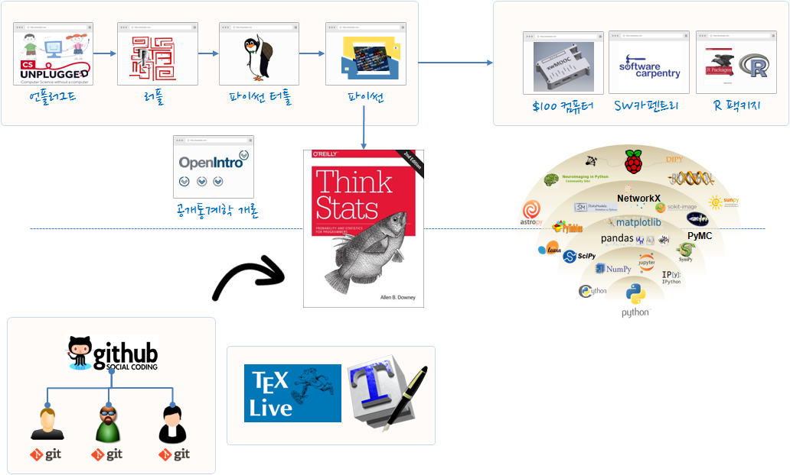

통계적 사고 워크샵
기계와의 경쟁을 준비하며…
“The future is here, it’s just not evenly distributed yet.”
- William Gibson
학습 개요
- 일시
- ’15년 11월 18일 ~ ’16년 1월 6일 (8주간)
- 매주 수요일 19:00 ~ 20:00
- 장소
- 서울 강남역 근처 토즈 타워점 : 위치확인

교재
통계적 사고 (ThinkStats2) : 프로그래머를 위한 확률과 통계
- (번역): https://github.com/statkclee/ThinkStats2
- (원서): http://greenteapress.com/thinkstats2/
- 번역 버젼(’15년 11월 17일), PDF 파일
- 번역 버젼(’15년 11월 17일), HTML 파일
«««« 연습문제 초벌 번역
«««« 한국어판 서문 추가
LaTeX 사전 공부
- LaTeX 기초
- LaTeX 석박사 논문 저작
출처: OpenIntro.org LaTeX 저작 교육과정
사전 준비
- Git과 GitHub
- 소프트웨어 카펜트리 Git을 이용한 버젼관리
- 리눅스와 맥 사용자:
sudo apt-get install git - 윈도우 사용자: Git Bash 설치
- 파이썬 설치: 아나콘다 기반 과학컴퓨팅 개발환경을 적극추천
- 아나콘다 기반 설치
- 파이썬 기반 설치
- 아나콘다를 적극 추천하는 사유
# 파이썬 2 기준 우분투 14.04 64비트 버젼 설치 사례
$ wget https://3230d63b5fc54e62148e-c95ac804525aac4b6dba79b00b39d1d3.ssl.cf1.rackcdn.com/Anaconda2-2.4.0-Linux-x86_64.sh
$ bash ~/Downloads/Anaconda2-2.4.0-Linux-x86_64.sh 사전준비 검증
[xwmooc:~/ThinkStats2/code ] $ python nsfg.pynsfg.py:42: SettingWithCopyWarning:
A value is trying to be set on a copy of a slice from a DataFrame
See the caveats in the documentation: http://pandas.pydata.org/pandas-docs/stable/indexing.html#indexing-view-versus-copy
df.birthwgt_lb[df.birthwgt_lb > 20] = np.nan
(13593, 244)
nsfg.py: All tests passed.부랑자(Vagrant)와 가상상자(VirtualBox)를 활용한 과학컴퓨팅 환경 구축
학습 목차
| 일시 | 학습 내용 |
|---|---|
| 2015. 11. 18 | 탐색적 자료 분석 & 분포 |
| 2015. 11. 25 | 확률 질량 함수 & 누적분포함수 |
| 2015. 12. 2 | 분포 모형화 (Modeling distributions) & 확률밀도함수 |
| 2015. 12. 9 | 변수간 관계 |
| 2015. 12. 16 | 추정 (Estimation) |
| 2015. 12. 23 | 가설 검정 (Hypothesis testing |
| 2015. 12. 30 | 선형최소제곱 & 회귀 (Regression) |
| 2016. 1. 6 | 시계열 분석 & 생존분석 |
열린 통계학 개론
- 현재 작업 중 :열린 통계학 개론
언론 기사
- 한국통계진흥원에서 발간 통계의 창 (2015년 여름호)
- 통계교육원 > 열린교육방 > e-book 게시판
- 미래인재 데이터과학지: 교육사례중심
- 전체 다운로드(100MB)
- 강서양천신문 ’15년 9월